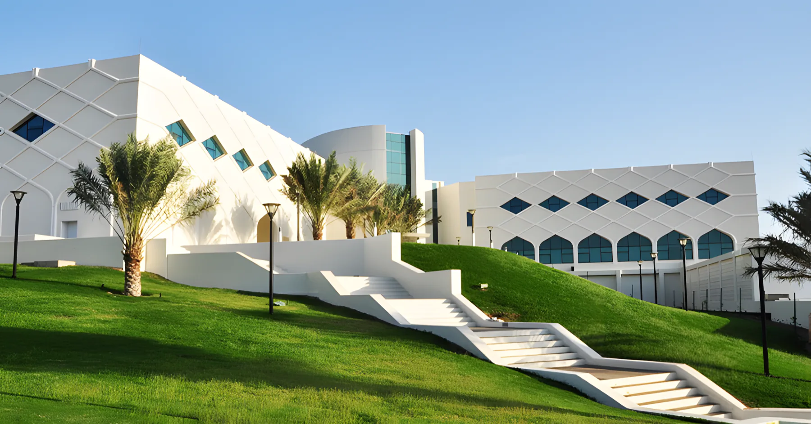
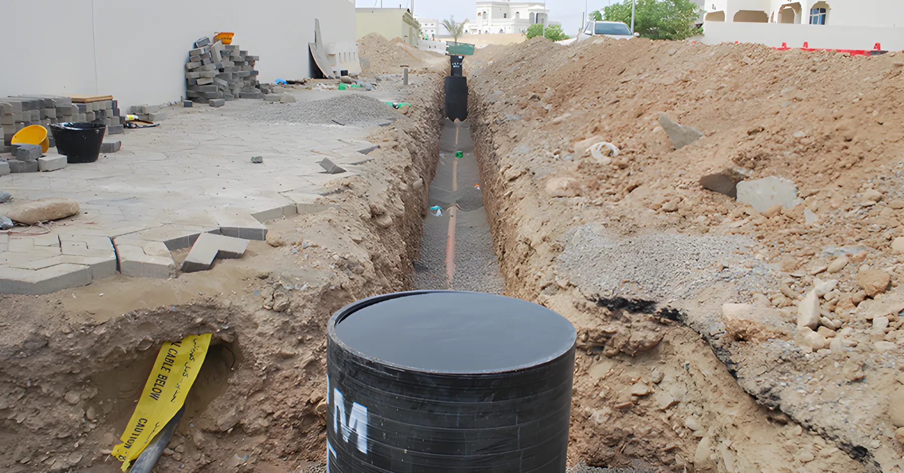
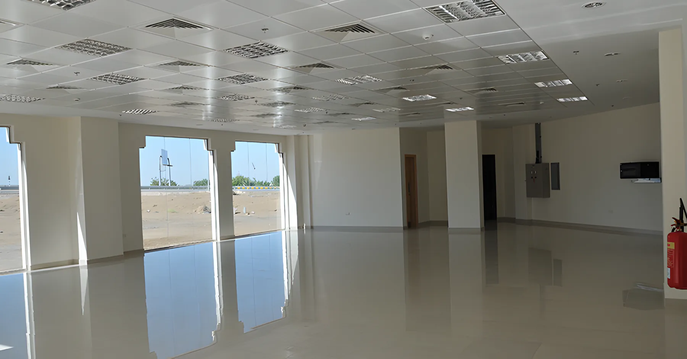
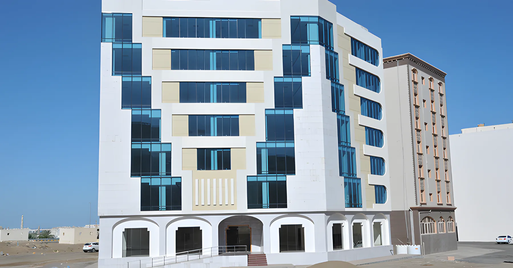

Capabilities
Eight divisions under one roof, with our own plant, engineers and workshops. We take a job from design to handover, or deliver the part you need.
Roads & Bridges
This division was set up to take on the Sultanate's infrastructure work: roads, bridges, highways and highway structures. We have built more than 600 km of roads, from internal roads and culverts to dualization and widening.
We have a full road design section with our own road design engineers. Many of our alignments run over hard ground, hills, wadis and steep mountains, where the logistics are half the job.
What it covers
- Roads, highways and highway structures
- Interchanges, flyovers and bridges
- Culverts, retaining walls and guard rails
- Dualization and widening of roads
- Our own road design section
Projects
- Upgrading of Sohar RoundaboutSohar
- Asphalt Road to Wadi Al SahtanRustaq
- Dualization of Al Rustaq Escarpment RoadRustaq
- Yanqul – Fida – Dank RoadYanqul
- Upgrading Salan RoundaboutSohar
- Grade Separated Junctions, Batinah HighwayBatinah Highway


Buildings
This division builds all kinds of building projects: industrial structures, commercial and residential buildings, schools, colleges, hospitals and mosques.
We have built and maintained hospitals, government offices, luxury villa compounds, high-rise buildings, heavy and medium steel structures, warehouses, factories, automotive centres and showrooms, and camps for projects.
What it covers
- Government offices and ministries
- Colleges, schools and universities
- Hospitals and health centres
- Commercial, residential and high-rise buildings
- Steel structures, warehouses and factories
- Mosques, showrooms and project camps
Projects
- A'Sharqiyah UniversityIbra
- Headquarters building, Ministry of InteriorAl Khuwair, Muscat
- Extended Health Centre, SeebSeeb, Muscat
- Caledonian College of Engineering CampusAirport Heights, Muscat
- Central Control BuildingBausher, Muscat
- Office Building at BausherBausher, Muscat
- Language Centre BuildingAl Khuwair, Muscat



Water Supply Networks
We are registered with the Public Authority for Electricity & Water for pipe laying up to 600 mm diameter, with the civil works that go with it.
The division lays water supply lines and builds reservoirs, water treatment plants and other water-retaining structures all over the Sultanate. At Hayma that meant 276 km of pipe, from the Duqm reservoir.
What it covers
- Water supply pipelines
- Ground reservoirs and elevated tanks
- Pumping stations
- Water treatment plants
- Water-retaining structures
Projects
- Water Supply System for HaymaAl Wusta
- Water Supply to Ras Al Hadd VillageRas Al Hadd, Sur


Sewerage Networks & STP
This division lays sewerage systems and builds sewage treatment plants, pumping stations and force mains for raw sewage and treated effluent, with washout and air release chambers.
For Barka we built the gravity network, three pumping stations and a 6,000 m³/day treatment plant with SCADA automation. In Muscat, the Mobella project alone was 458 km of gravity sewer for Haya Water.
What it covers
- Gravity sewer networks and house connections
- Sewage treatment plants
- Pumping stations and force mains
- Treated effluent lines
- Washout and air release chambers
Projects
- Mobella Wastewater ProjectMobella, Muscat
- Al Amerat Gravity Sewer NetworkAl Amerat, Muscat
- A'Seeb Wastewater ProjectSeeb, Muscat
- A'Seeb Wastewater Project, Package 01Mobella, Muscat
- Sewerage Network and STP, BarkaBarka



Power Transmission & Distribution
We take on EPC projects for 132 kV, 33 kV and 11 kV substations for infrastructure, industrial, commercial and residential projects across the Sultanate.
Registered with OETC, DCRP (Grade A), RCA and other utility companies, with a dedicated team for HV cable works, transmission lines, substations and street lighting.
What it covers
- 132 kV, 33 kV and 11 kV substations (EPC)
- HV underground cables
- HT overhead and transmission lines
- RMUs and switchgear
- Street lighting
Projects
- 132/33 kV Yanqul Grid Station & Ibri Regional BuildingYanqul & Ibri
- Substation in DuqmDuqm
- Substation in SalalahSalalah


MEP Works
Our electromechanical division handles building electrification, sanitation, plumbing, air-conditioning, power installation, industrial and domestic lighting, and the erection of electrical and mechanical equipment.
At Diar Ras Al Hadd that meant water supply, fire-fighting, irrigation, storm and waste water networks, 11 kV and LV cabling, street lights and a substation, alongside the civil works.
What it covers
- Building electrification and power installation
- Plumbing and sanitation
- Air-conditioning
- Industrial and domestic lighting
- Erection of electrical and mechanical equipment
Projects
- Infra Civil & MEP Works, Diar Ras Al HaddRas Al Hadd, Sur
- A'Sharqiyah UniversityIbra


Aluminium & Glazing
This division fabricates and installs all types of aluminium doors and windows, glass work, kitchen units and counters.
The aluminium workshop is fully equipped, with a trained and experienced crew and modern precision equipment.
What it covers
- Aluminium doors and windows
- Glass work
- Kitchen units
- Counters

Joinery & Carpentry
Our carpentry and interior decoration office and workshop sit inside the main office premises: a 1,000 m² workshop with a separate 1,500 m² yard.
The joinery division takes on all types of carpentry and joinery and has handled interior decoration on several large projects.
What it covers
- All types of carpentry and joinery
- Interior decoration works
- 1,000 m² workshop
- 1,500 m² separate yard

Talk to us
Head office and base workshop, Muscat
P.O. Box 2053, Postal Code 111, Central Post Office, Sultanate of Oman
Tenders, general enquiries, vendor registration and careers: call the office or email us.
- Telephone
- +968 2450 2581 / 82 / 83
- Fax
- +968 2450 2532